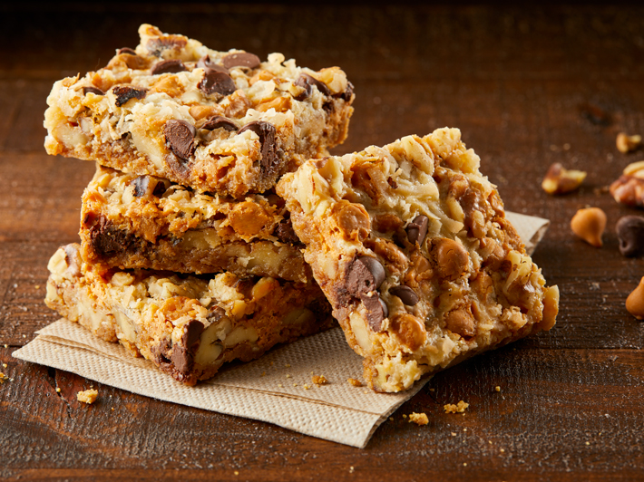

7 Layer Cookies

No-fuss, easy-to-bake treat that everyone will love
These delicious 7 layer cookies have been a Christmas Eve staple
in my family for generations. With just 7 ingredients and little
prep-work, adding them to your dessert platter is a no-brainer. (And don't
let the coconut and nuts scare you - even the pickiest of eaters that
don't usually like these ingredients tend to still love these cookies!)
Ingredients
- 3/4 cube butter
- 2.5 cups graham cracker crumbs
- 1 cup finely shredded coconut
- 6 oz chocolate chips
- 6 oz butterscotch chips
- 1 can Eagle brand condensed milk
- 1 cup chopped walnuts
Steps
- Melt ¾ cube butter in 9x13 pan.
- Add 2 ½ cups graham cracker crumbs and press together
- Sprinkle 1 C. fine coconut
- Sprinkle 1 6 oz package chocolate chips
- Sprinkle 1 6 oz package butterscotch chips
- Press down with hands
- Drizzle condensed milk
- Sprinkle chopped nuts over that and press down
- Bake 30-35 minutes at 325 degrees Fahrenheit
- Cut in squares once cooled